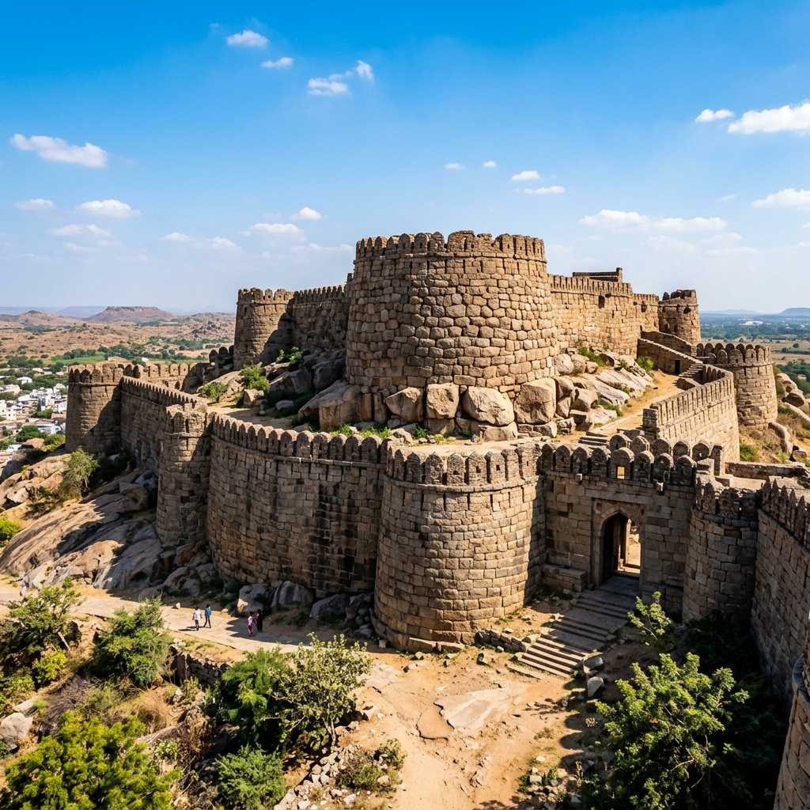
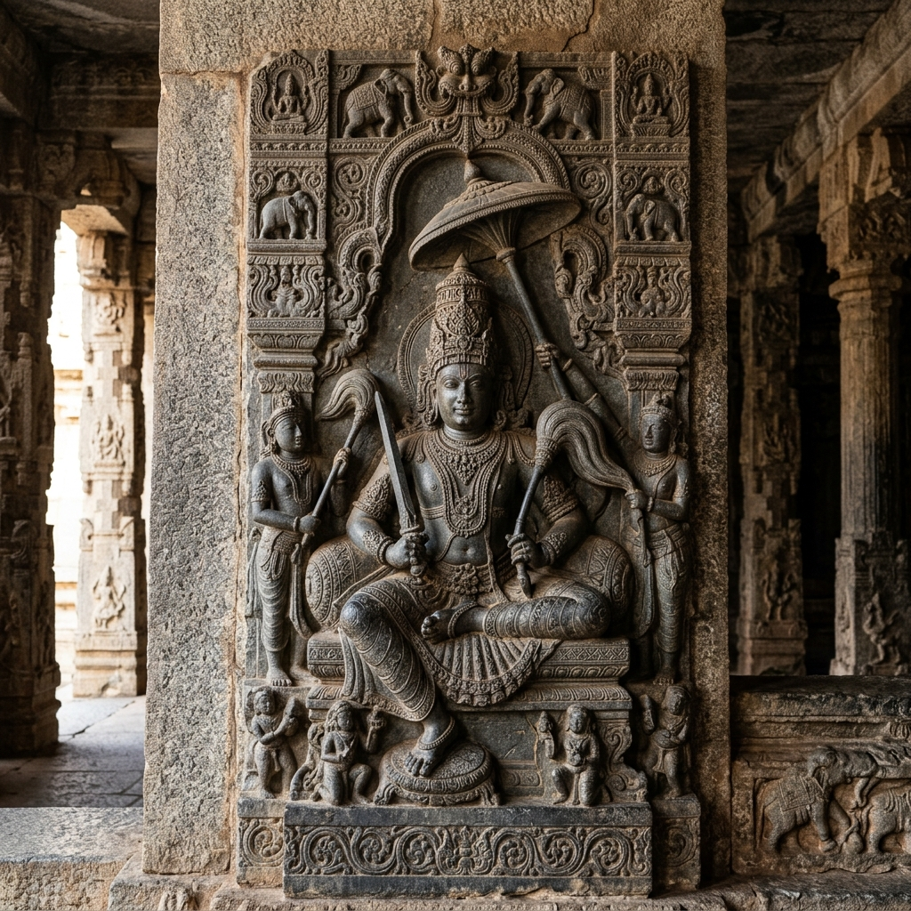
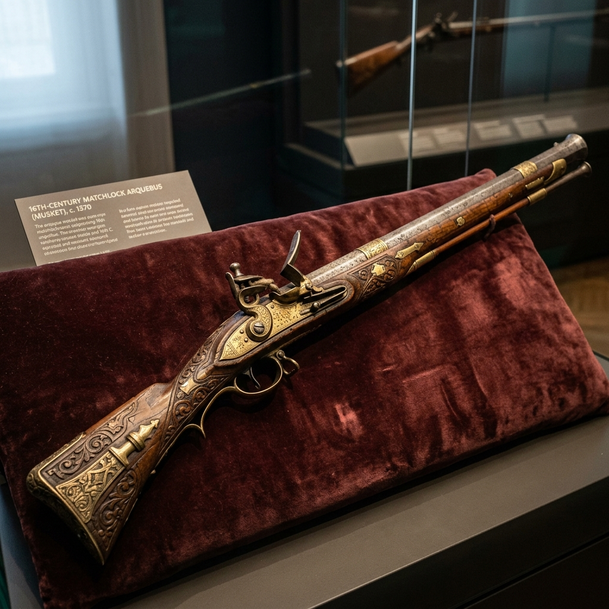

Battle of Raichur Explorer
Enter the legendary fortress of Raichur. Explore the watershed military campaign where Emperor Krishnadevaraya's artillery and cavalry broke the power of the Bijapur Sultanate, securing the fertile Raichur Doab.
The Struggle for the Fertile River Lands
The Raichur Doab, a wedge of rich, alluvial agricultural land situated between the Krishna and Tungabhadra rivers, was the prime flashpoint of conflict between the Hindu Vijayanagara Empire and the Islamic Deccan Sultanates for centuries. In 1512, Sultan Ismail Adil Shah of Bijapur captured the strategic Raichur Fort, taking advantage of internal Vijayanagara politics.
By 1520, the great Vijayanagara Emperor Krishnadevaraya determined to reclaim the fort. He assembled a massive force—estimated at over 250,000 infantry, cavalry, and war elephants—and marched to besiege the city. The siege was noted for its intensity and the introduction of advanced firearm tactics.
🏛️ At a Glance
- Combatants: Vijayanagara Empire vs. Adil Shahi Sultanate of Bijapur.
- Date: May 1520 CE.
- Outcome: Decisive Vijayanagara victory.
- Historical Legacy: Marked a major shift in Deccan warfare with the use of Portuguese arquebusiers.
Commanders of the Campaign
The battle brought together two powerful rulers of the 16th century alongside European mercenaries.
Krishnadevaraya
The legendary Tuluva dynasty Emperor of Vijayanagara. He personally led his troops, exposing himself to direct combat to rally his forces.
Ismail Adil Shah
The young, ambitious Sultan of Bijapur, defending his northern borders and the strategic fortress with a disciplined cavalry vanguard.
Christovão de Figueiredo
The Portuguese captain who led a force of arquebusiers. Their precise musketry breached the battlements, turning the tide of the siege.
🏹 Key Military Elements
- Portuguese Musketry: Handgun shooters picked off fort defenders from defensive trenches.
- Massive Cavalry: Vijayanagara deployed 32,000 elite horsemen to flank the Sultanate lines.
- War Elephants: Used as armored battering rams to breach outer stone gates.
- Artillery: Early bombards and stone-throwing mortars used to weaken the ramparts.
The Cross of the River and the Arquebusiers
The turning point of the siege came when Ismail Adil Shah crossed the Krishna River with a relief force of 50,000 troops, intending to surprise the Vijayanagara army. Seeing this, Krishnadevaraya temporarily lifted the siege and marched directly to confront the Sultan. The initial Bijapuri cavalry charges pushed back the Vijayanagara lines, but the Emperor personally mounted his horse and led a counter-charge.
Simultaneously, Christovão de Figueiredo's Portuguese musketeers set up sniping positions, systematically shooting the Bijapuri gunners and command officers. The Sultanate lines collapsed, leading to a rout across the Krishna River. Krishnadevaraya then returned to Raichur and captured the fort.
The Zenith of Vijayanagara Supremacy
The victory at Raichur established the empire's hegemony over South India but sowed the seeds of future conflicts.
Annexation of Raichur
The fortress was refortified under Vijayanagara, securing the fertile doab and boosting agricultural revenues.
Portuguese Alliance
The battle cemented trade ties with the Portuguese in Goa, who supplied the empire with Arabian horses and gunpowder weapons.
Sultanate Coalition
Humiliated by the loss, the Deccan Sultanates began to unite, culminating in the Battle of Talikota in 1565 CE.
Chronology of the Campaign
Follow the events of the 1520 expedition.
Sultanate Takeover
Ismail Adil Shah captures Raichur from the regent of Vijayanagara, taking advantage of administrative crises.
March to the Doab
Krishnadevaraya mobilizes a massive imperial army and establishes camp around Raichur's stone walls.
The Open Battle
The Sultan's relief force crosses the Krishna River. Krishnadevaraya's counter-charge and Portuguese snipers rout the Sultan's army.
Breach and Capture
Portuguese arquebusiers clear the ramparts. The fort gates are breached and the city surrenders to Vijayanagara.
Relics of Vijayanagara
Explore the stone carvings, fort walls, and firearm relics of the campaign.

Raichur Fort ramparts
The granite masonry and defensive bastions of the medieval fortress.

Krishnadevaraya Relief
Stone depiction of the Emperor who reclaimed the Raichur Doab.

Portuguese Matchlock Gun
The early firearm technology that turned the tide of the siege.
📚 References & Further Reading
- Nunes, Fernão (c. 1537 CE). Chronica dos Reis de Bisnaga (Chronicles of the Kings of Vijayanagara).
- Sewell, Robert (1900). A Forgotten Empire (Vijayanagar): A Contribution to the History of India. Swan Sonnenschein & Co.
- Stein, Burton (1989). The New Cambridge History of India: Vijayanagara. Cambridge University Press.
- Nilakanta Sastri, K. A. (1955). A History of South India from Prehistoric Times to the Fall of Vijayanagar.